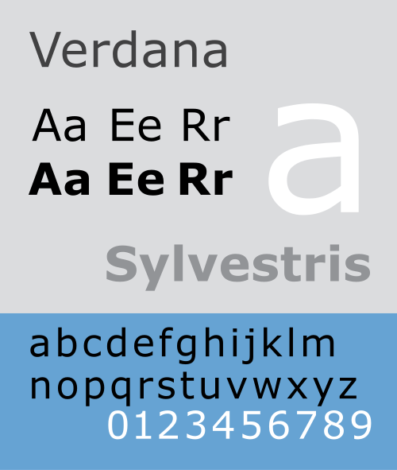
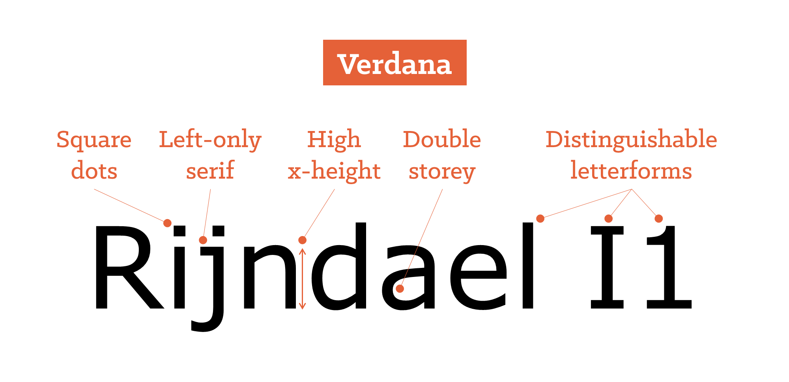

November 4, 1996
Verdana is a humanist sans-serif typeface designed by Matthew Carter for Microsoft. It was released on November 4, 1996, as part of Microsoft’s Core Fonts for the Web project. Verdana was specifically designed to be clear and readable on computer screens, which had low resolution at the time.
Unlike many earlier typefaces that were created for print, Verdana was designed for digital display. It features a large x-height, wide proportions, and generous spacing between letters. These characteristics improve readability, especially at small sizes on screens.

Verdana represented a major shift in typography because it was designed specifically for screen environments rather than print. Its large letterforms and increased spacing made text easier to read on digital displays.
These design decisions improved the clarity of body text and interface text. Verdana helped demonstrate that typography needed to be designed differently for screens, taking into account resolution and pixel structure.
Verdana helped establish new standards for screen typography. It showed that legibility at small sizes was a design problem that required specific solutions. Because of its readability and clarity, Verdana became widely used in websites, operating systems, and user interfaces.
Its release contributed to making long-form reading on screens more comfortable and accessible. It also influenced the development of other typefaces designed specifically for digital environments.
